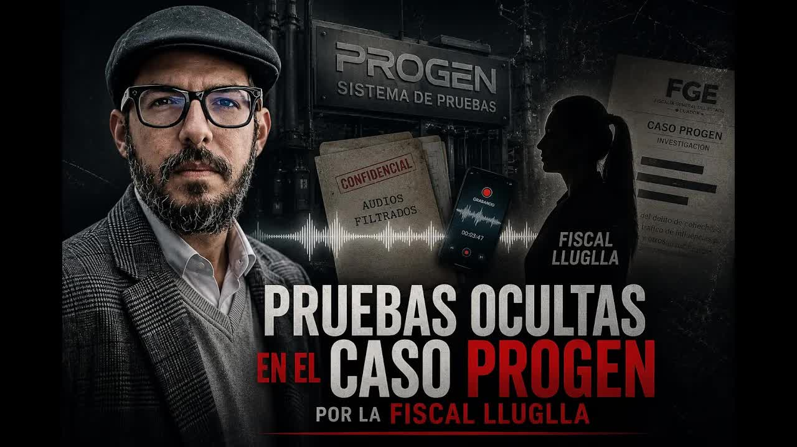
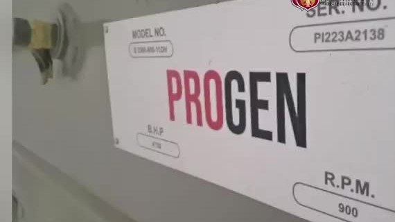
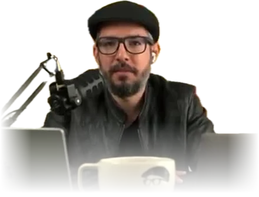
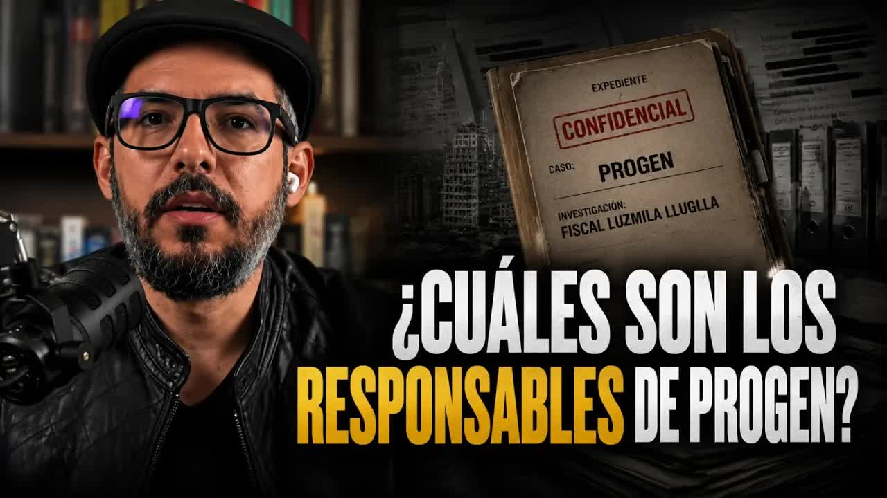
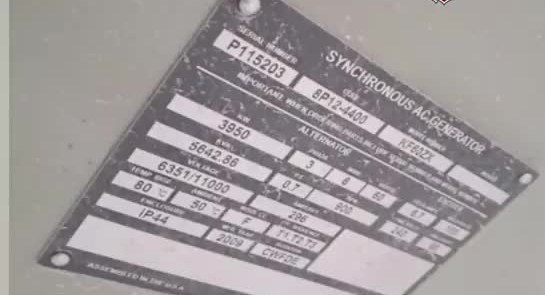
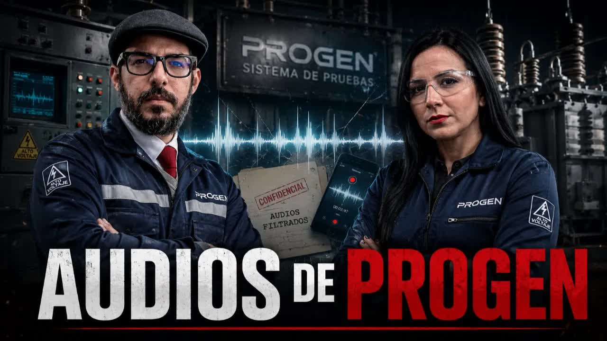
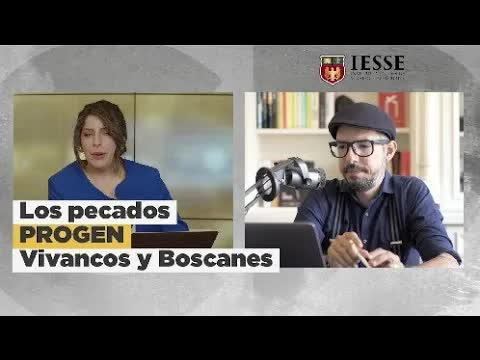
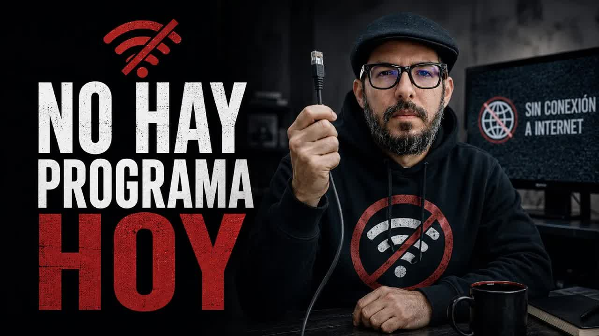
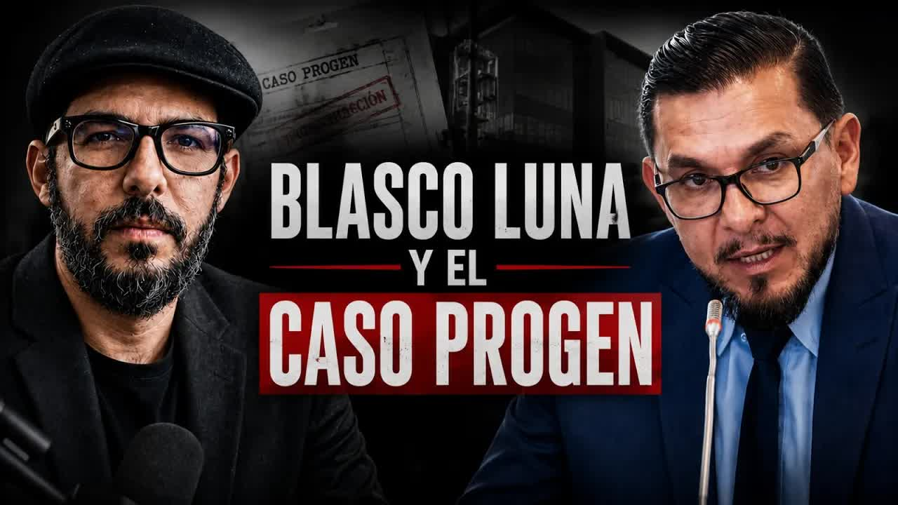

May 20, 2026 · The Villacís and Orozco recordings
Ecuador paid 149 million dollars for emergency generators that turned out to be scrap. Three CELEC technicians traveled to Houston to inspect them, recorded a proof-of-life video because they feared for their lives, and secretly recorded their bosses. They handed everything over to the Attorney General's Office (Fiscalía) on September 24, 2025. Eight months later, the prosecutor on the case was seeking prison for them, and the evidence was not in the case file. Boscán & La Moni published it.

| Step | Received by | Date | Byline |
|---|---|---|---|
| Delivery | CELEC technical commission | Sep 24, 2025 · 12:16 | |
| Receipt | Prosecutor L. Lluglla | Sep 24, 2025 | |
| Notification | Attorney General | no date | |
| Entry into the record | Prosecution case file | no date | |
| Publication | Boscán & La Moni | May 19 and 20, 2026 |

Hi, we are in Houston, United States, today, September 19, 2024. That is how the video begins. It is not an anonymous leak or a last-minute discovery: it is evidence the Ecuadorian state had been holding, with a signed and dated delivery record, since September 24, 2025, and that did not appear in the Progen case file. Three nervous men introduce themselves to a phone camera in a room at the Thompson Hotel: Nelson Castro, Celso Sánchez and Paul Flores. They are not drug traffickers or gang members. They are CELEC employees, the bottom of the pyramid, the technical commission the Ecuadorian state sent to verify what it was about to buy from Progen. One of them had no visa; the state got him one. They are recording to leave a record for their families, they say, because at six in the evening they have a final meeting with the company, and what happens to them depends on that meeting. They open the window to show where they are. That video sat for months in the hands of the Attorney General's Office, and nobody had seen it until Mónica Velásquez was contacted by the source and Andersson Boscán put it on air on May 19, 2026, watermarked and uncut. What was published that day was not a journalistic revelation: it was evidence that had already been handed over and that someone had left out of the case.
We have confirmed, verified, taken photographs. Unfortunately they took the photographs from us, but we want to put on record that this equipment does not work.
Nelson Castro, CELEC technical commission, Houston, September 19, 2024
The backdrop is the worst blackout crisis in recent history. Progen Industries LLC, based in Florida, first appeared in December 2023 with proposals to the thermal power unit that went nowhere. On May 16, 2024, a month after taking over as acting energy minister, Roberto Luque traveled to Tampa with his adviser Peter Dreger and with Fabián Calero, CELEC's acting general manager, and visited a company that was not yet called Progen but HIS Industry LLC. He recorded a video saying he was there to verify and vouch for the proposal. Two months later, CELEC's technical commission signed the qualification record, and on August 2, 2024, the contracts were signed: 99 million for Salitral and 49 million for Quevedo, 50 generators in all, 29 for Guayaquil and 21 for Quevedo. Calero, who had been delegated to sign, in turn delegated to Byron Orozco, manager of Termopichincha. Luque says he did not sign. Antonio Gonçalves, minister between July 2 and October 9, 2024, says he never visited Progen and that the process was already underway when he arrived. Calero says he did not sign either. It is, in Boscán's words, the first contract in history that signed itself.
The technicians inspected equipment at two sites, Apollo Electric and a General Electric facility. At the entrance, their phones were taken away for security reasons. Businessman José Manrique, the face of Progen in Ecuador, handed them a camera to record whatever they wanted. They took photos. The camera came back to Ecuador almost empty: two or three were left. Carla Saud, Progen's representative for Latin America and majority partner in Astrobrixa, the company that received the payments, welcomed them with T-shirts, caps and gift boxes. Inside was a cell phone. They handed it to the Attorney General's Office unopened. On the second visit nobody took their phones, and they took pictures in secret: old diesel engines piled up among pipes and cardboard boxes, electrical cabinets with peeling paint and rusted hinges, equipment sitting outdoors in a shed with bathrooms. Ninety percent of what they were supposed to inspect was already wrapped in plastic. They believed it was scrapped equipment, hastily repainted. Without their sign-off, the state could not release the money.
That same September 2024, Paul Flores filed a complaint with the Attorney General's Office: a stranger had left a flyer at his wife's café in Conocoto. We have you located, engineer Flores, you and your family, we are going to kill you over the CELEC contracts. The Attorney General's Office placed him in its victim and witness protection program. In Houston they traveled with armed security. What they had to deliver was a report that Progen wanted to review on site. The Comptroller General's Office, which did not learn of the contract during its first year, later put the losses at 100 million dollars. Salitral does not operate. Quevedo does not operate. Someone decided that Progen should receive about 70% up front, and the payments were made under the administration of Inés Manzano. On May 14 and 15, 2026, the Attorney General's Office charged 21 people with embezzlement. Among them were Castro, Sánchez and Flores.
| Date | Project or beneficiary | Amount | Money trail | Record |
|---|---|---|---|---|
| 2024-08-02 | Salitral contract · 29 generators, 100 MW | $ 99,4 M | CELEC (Termopichincha, manager Byron Orozco) → Progen Industries LLC, Florida; in Ecuador, payments go to Astrobrixa (José Manrique and Carla Saud) | Signed under Minister Antonio Gonçalves. Technical guarantee offered: new, unused equipment |
| 2024-08-02 | Quevedo contract · 21 generators, 50 MW | $ 49 M | CELEC → Progen Industries LLC | Total for the two contracts: 149.1 million. They were supposed to generate power from November 2024 |
| 2024-09 → 2025 | Advance and payments on the Salitral contract | $ 69,5 M | CELEC → Progen, via Astrobrixa. About 70% paid up front, with no guarantee to enforce | Disbursements under Minister Inés Manzano, despite reports saying payment should not be made. Actual progress: 73.58% |
| 2025 | Losses calculated by the Comptroller General's Office | $ 100 M | The generators: a model out of production since 2015 according to the manufacturer, RPG; altered nameplates; refurbished and repainted equipment | Salitral and Quevedo never operated. The blackouts continued |
| 2025-09-24 | Evidence handed to prosecutor Lluglla | — | Technical commission → Attorney General's Office, 12:16, Quito: video, audio recordings, phones, emails, an unopened gift phone. Logged into the chain of custody. Never entered into the case file | On May 19, 2026, the FGE admitted that the videos 'are not currently part of the prosecution case file' |
| 2025-06 | CELEC's settlement on terminating the contract | $ 12,4 M | CELEC is claiming fines from Progen, a 36-month technical guarantee (6.9 million) and outstanding balances | Progen got an emergency arbitrator at the Ecuadorian-American Chamber of Commerce to suspend the termination |
| 2025 | A ranch for Progen's owners | $ 10 M | It came out of the 150 million Ecuador paid, according to Boscán | Ecuador has not managed to freeze Progen's money in the United States |
On May 20, 2026, Boscán & La Moni aired what follows the video: the audio the technicians recorded on hidden phones when they spoke with their bosses. The first is from September 20, 2024, the day after the hotel. The commission asks to meet with Carlos Villacís, CELEC's deputy manager. They tell him their phones were taken, that the camera came back without photos, that what they saw is not equipment with zero hours of use, and that they are afraid. One of them says his family works at the Comptroller General's Office and that they are going to be audited over this. They want a report that says what they saw. Villacís proposes something else: that they base their judgment on the review by the private inspection firm, AP Inspections, which had already recommended going ahead, and on a general inspection, number of units and little more. The technicians reply that they traveled all that way to look at a piece of paper that could have been emailed to them.
I'll be honest with you, the directive that's coming, I already know more or less what it is: the directive is going to be that this damn thing cannot fall through. It cannot fall through.
Carlos Villacís, CELEC deputy manager, audio from September 20, 2024
Villacís insists there is nothing behind it, that he is just following orders, and that when you want to do things, you have to do them right. The technicians tell him they are even afraid to travel and ask him to do whatever it takes, legally, to clear them. Taking advantage of the boss not being there, they say, they confess they are afraid. The boss is Byron Orozco, manager of Termopichincha, the CELEC business unit that hired Progen. Orozco had traveled to Houston with the commission and made them take a selfie as proof they had traveled together. He introduced himself to the commission by saying he had very good political connections, according to the show's sources.

The second recording is from April 2, 2025. The scandal has already broken and the money has already been paid. Orozco gathers the commission at the Electroguayas head office in Guayaquil and orders the phones collected. Pepito, collect the phones, you can hear. One of the technicians kept recording. There's no turning back now, he tells them. Either you let yourselves be helped or you defend yourselves on your own. He gives them five minutes to think. He wants them to sign, by hand, an addendum to the report already in the case file stating that all 29 units were inspected, that they were wrapped in clear plastic, and that the nameplates and technical specifications could be checked. The technicians had seen six. Orozco wants to leave a defense open: that what they saw in the warehouse was fine and that what arrived in Ecuador was different. He coaches them on how to talk about the contract administrator, Marlon Casillas: you don't pin it on Marlon and Marlon doesn't pin it on you. If in doubt, better to keep quiet. With Carlos and with Gabi, he says, we'll be watching the groups so we can step in if they put you on the ropes. That's what we did in Quevedo. We keep answering as CELEC, headquarters included.
Either you let yourselves be helped or you defend yourselves on your own.
Byron Orozco, manager of Termopichincha, audio from April 2, 2025
Orozco was charged with embezzlement on May 14, 2026. Villacís is on the list of 21. The Attorney General's Office accuses the three technicians as principals in embezzlement for having signed a report. What it does not say is that they signed it under death threats, that they reported the threats in time, in 2024, and that they hold the evidence. Nobody asked the commission on whose orders it signed or who threatened it. Nobody asked Orozco or Villacís about these recordings. For Boscán there is only one reading: the Progen theft was not just the work of a few con artists who played the state for fools; there was a chain of command that pressured the bottom of the pyramid to legitimize it. And the Attorney General's Office was seeking prison for the bottom.
They are so tough with the weak and so soft with the strong.
Andersson Boscán, May 19, 2026
Prosecutor Luzmila Lluglla Gavilanes received the material on September 24, 2025, at 12:16, in Quito: the hotel video, the audio recordings, phones, emails and complete communications. All of it was logged into the chain of custody. Boscán showed the document on air in case the prosecutor's memory failed her. Lluglla had been assigned to push the investigation forward by a memo dated July 22, 2025, signed by Magali Ruiz, the Attorney General's Office's general legal counsel coordinator and now its representative to the Judiciary Council. She is the same prosecutor who, in the Encuentro case, the one that started out as the Gran Padrino case, signed the opinion that left one of the suspects out of the proceedings. People close to her office confirmed to the show that there were working interviews with at least one of the technicians and promises to his defense that the information would be used and that they would not be prosecuted.
None of that happened. Eight months later, with 21 people already charged, the video and the audio were not in the case file. On the night of May 19, 2026, after the first broadcast, the Attorney General's Office issued a statement on the criminal proceeding it calls Apagón ("Blackout"): the evidence supporting the charges is identified in the case file and, in that context, it clarified that the videos circulating on social media are not currently part of the prosecution case file nor do they constitute evidence formally entered into the proceedings. That was the confirmation. Attorney General Leonardo Alarcón's team assured Boscán that Lluglla had not notified him of the material's existence and that Alarcón found out by watching the show. Alarcón was acting attorney general and was competing in the selection process to stay in the post for six years.
Video from September 19, 2024. Nelson Castro, Celso Sánchez and Paul Flores put on record for their families that the equipment does not work and that they fear for their lives. Published in full, watermarked, on May 19, 2026.
September 20, 2024, recorded on a hidden phone: the directive is going to be that this cannot fall through. Published on May 20, 2026.
April 2, 2025. Orozco collects the phones and asks for a handwritten report on 29 units that were never seen: either you let yourselves be helped or you defend yourselves on your own. Published on May 20, 2026.
Second visit: old diesel engines piled up among pipes and cardboard boxes, electrical cabinets with peeling paint and rusted hinges, equipment wrapped in plastic.
The three technicians' complete communications with their bosses during the inspection and after the scandal.
Received in Houston in a box with T-shirts and caps, from Carla Saud. Handed to the Attorney General's Office just as it arrived.
September 2024. A stranger left a death threat over the CELEC contracts at the café run by Paul Flores's wife in Conocoto. The Attorney General's Office took him in as a protected witness.
Video, audio recordings, phones and emails are logged into the chain of custody in Quito. Boscán showed the document on air.
She listened to them the day she received them. There were working interviews with at least one technician and promises to his defense that the information would be used.
He was never notified that the material existed. He found out by watching the show on May 19, 2026.
On May 14 and 15, 2026, the Attorney General's Office charged 21 people, the three technicians included, without this evidence.
The full video and the subtitled audio recordings. That night the FGE admitted the material is not part of the case file.
This means the Progen theft is not a theft by a few con artists who play the state for fools, it is a theft planned from inside the state, and maybe that is why Lluglla did not want this audio to become public.
Andersson Boscán, May 20, 2026
The Attorney General's Office did not ask the commission who threatened it or on whose orders it signed, and did not question Villacís or Orozco about the recordings.
That same May 19, another document leaked from Lluglla's office: the memo in which she recuses herself from the case because she found someone with National Court jurisdictional privilege, Energy Minister Roberto Luque, and must send the case file up to the attorney general, the only one who litigates before that court. When the case reached the top, Luque's name was not there. The only person of ministerial rank charged is Antonio Gonçalves, whose defense argues he was dragged in so there would be a convicted minister other than Luque. Gonçalves points at Luque. Luque points at those who signed. And the list of 21 has absences that Boscán named one by one on air: Marlon Casillas, the contract administrator; Rommel Calderón, administrator of Salitral; José Manrique, Progen's representative in Ecuador; Progen's CEO, Manning, who hosted the Ecuadorian delegation and remains in the United States, sued in Florida but not prosecuted in Ecuador. There are a whole lot of people who are not at the dance, Boscán said. Let's invite them to dance.

On May 22, 2026, Boscán went through the role of each person implicated, one by one. Roberto Luque, acting energy minister from April 16, 2024, declared the emergency, took part in drafting the technical specifications and terms of reference, traveled to Tampa and recorded the video that haunts him. His defense is that he did not sign and that he visited several suppliers, and he has not explained who chose the suppliers or who invited Progen. Peter Dreger, his adviser, traveled with him; the Comptroller General's Office found evidence against him and the Attorney General's Office did not include him. José Manuel de Oliveira, the ministry's legal adviser and Luque's delegate to validate the contracts, was not included either, despite the Comptroller's findings: in a 150-million contract there was no guarantee to enforce. Inés Manzano, environment minister and later acting energy minister, was not involved in the pre-contract phase, but the payments were ordered during her tenure, despite reports saying they should not be made. She has not been charged, and she is the one who sued Progen in the United States.
What is truly scandalous about the Progen case is that they were handed money with no guarantee and an advance of almost 70%. In other words, we gave away millions of dollars in exchange for nothing.
Andersson Boscán, May 22, 2026
Fabián Calero, CELEC's acting general manager at the time of the award, traveled to Tampa, delegated the signature to Orozco because he was afraid to sign and, after the disaster, was promoted: Manzano took him on as deputy minister. He wanted to cooperate with the Attorney General's Office and then backed out. He has recordings, as does Orozco, who keeps one in which he reports that Progen should not be paid, and in the end it is paid anyway. José Manrique, a partner in Astrobrixa, is the first known point where the money landed; he held meetings at the ministry and bought a house in Samborondón after trying to get the seller to sign a confidentiality agreement. He has not been charged. Carla Saud, the majority partner, has. For Boscán the case is as simple as two plus two: squeeze Calero and Orozco, sit Manrique and Saud down, and follow the money.

In early June 2026, Calero's defense leaked a voice note from Inés Manzano to Ecuavisa. In it, the minister tells her then deputy minister that the summons to the National Assembly is not oversight but a piece of theater coordinated with ruling-party assembly member Diana Jácome so the issue would not blow up, and asks him to tell her what he would like to testify. Manzano did not deny it was her voice. Jácome said in the Assembly that there is no audio or text from her, that it is a conversation between third parties, that she is neither chair nor member of the Oversight Committee, and that she had received threats, for which she blamed the Citizen Revolution party. Boscán replied that nobody is accusing her of stealing but of pretending to exercise oversight, and that if Manzano is lying, Jácome should sue her. Assembly member Blasco Luna, of RC, said on the June 6 show that on July 2, 2025, Calero appeared before the committee, that he confronted him and that Jácome cut off his microphone, suspended the session and took Calero to her office; and that twice they requested the appearance of Luque, Manzano, Gonçalves and Félix Wong, and Jácome did not allow it. Luna and Lenin Barreto, who filed the first complaint with the Attorney General's Office in 2024, are pushing the impeachment trial against Manzano, which the Legislative Administration Council has already admitted.
The technicians who are being riddled with bullets for having presented the evidence, and whom the Attorney General's Office has not even considered as material evidence in this investigation.
Blasco Luna, assembly member, June 6, 2026
The revelation had an effect the same day. The Attorney General's Office had to acknowledge in writing that the evidence was not in the case file. The attorney general learned from the show that his subordinate had had it since September 2025. Prosecutor Luzmila Lluglla was removed from the Progen case. The investigation, however, remains unchanged: 21 charged with embezzlement, the three commission technicians among them, and without Manrique, without Progen's CEO, without Casillas, without Luque, without Manzano. Nobody has answered who threatened the commission or who gave the directive that the contract could not fall through.

Meanwhile, the new energy minister announced that he wants to unblock the court case so the Progen generators can be put into operation. Blasco Luna estimates that this power would cost between 20 and 25 cents per kilowatt-hour. Progen has not returned a single dollar. Ecuador has not managed to freeze its money in the United States. What remains of the Progen case is above all this: the evidence existed, it had been handed over, signed and receipted, and it had to be taken out of the prosecutor's office for the country to learn that it existed.
Updated September 5, 2026
Progen sends proposals to the thermal power unit. Nothing comes of them.
He takes over Energy in the middle of the crisis and declares the emergency.
Luque travels with Peter Dreger and Fabián Calero to visit the company that will become Progen. He records a video.
99 million for Salitral and 49 million for Quevedo. Minister: Antonio Gonçalves. Signature delegated to Byron Orozco.
Castro, Sánchez and Flores record at the Thompson Hotel in Houston: the equipment does not work and they fear for their lives.
Villacís, on tape: this cannot fall through. That month Flores reports a flyer with a death threat.
Orozco collects the phones and asks for a handwritten report: either you let yourselves be helped or you defend yourselves on your own.
CELEC terminates the contract at 73.58% progress with 69.5 million paid, and claims 12.4 million. An arbitrator suspends the termination.
He appears before the committee; Jácome cuts off Blasco Luna's microphone and suspends the session.
Memo from Magali Ruiz: Luzmila Lluglla is put in charge of the investigation.
At 12:16, the commission hands Lluglla video, audio recordings, phones and emails. Chain of custody.
The Attorney General's Office charges 21 people with embezzlement, including the three technicians. The evidence is missing.
Boscán & La Moni publish the proof of life. That night the FGE admits it is not in the case file.
Villacís and Orozco, on tape. The attorney general found out by watching the show.
Calero leaks the voice note about the oversight theater. The impeachment trial against Manzano clears the CAL.
CELEC technician. He starts the recording of the video in Houston.
CELEC technician. He described the equipment as scrap.
CELEC technician. He reported the threatening flyer in September 2024.
CELEC deputy manager. Recorded on September 20, 2024: this cannot fall through.
Manager of Termopichincha. He signed the contracts by delegation; recorded on April 2, 2025.
Prosecutor on the case since July 2025. She received the evidence and did not enter it into the case file.
Acting attorney general. He learned of the material by watching the show.
Acting energy minister in 2024. He traveled to Tampa to see Progen.
Energy minister when the contracts were signed.
The minister under whom Progen was paid. The voice in the theater audio.
CELEC's acting general manager at the time of the award. Later a deputy minister.
Progen's representative in Ecuador and a partner in Astrobrixa, which received the payments.
Progen's representative for Latin America. She welcomed the commission with gifts.
Contract administrator.
Ruling-party assembly member who led the legislative oversight of Progen.
RC assembly member and committee member. Sponsor of the impeachment trial against Manzano.
RC assembly member. He filed the first complaint with the Attorney General's Office in 2024.
She was contacted by the source and reviewed the material.
He published the video and the audio recordings on May 19 and 20, 2026.
Statement of May 19, 2026: the evidence supporting the charges is identified in the case file; the videos circulating on social media "are not currently part of the prosecution case file nor do they constitute evidence formally entered into the proceedings in this case."
It assured Boscán that prosecutor Lluglla did not notify the attorney general that the material existed and that he found out by watching the show.
That there is nothing behind it, that he is just following orders, and that when you want to do things, you have to do them right.
That he visited several suppliers, not just Progen, that he did not sign the contract and that he has already reported to the Attorney General's Office. He has not given the show an interview.
That he never visited Progen, that the process was already underway when he arrived and that the person to ask is Luque.
That he did not sign either: he delegated. His defense leaked Inés Manzano's voice note to Ecuavisa.
In the National Assembly: that there is no audio or text from her, that it is a conversation between third parties, that she is neither chair nor member of the Oversight Committee and that her assets have not grown. She blamed the Citizen Revolution party for threats.
As of June 3, 2026, she had neither confirmed nor denied that the voice in the recording was hers.




Hi, we are in Houston, United States. Today September 19, 2024 to leave on record for all citizens, our families about what is happening with these procurement processes in salitral. My name is Nelson Castro. The colleague pas colleague Coo Sánchezo Sánchez and What are you seeing? What you are seeing is something that as I usually tell you, nobody has seen. This is a video that has been in ha…
Read the full transcriptThe kingpins dress horribly like kingpins. Patucho Celso, Celso Moreira, one of the most feared kingpins of Ecuadorian drug trafficking, for example, used to buy Versache shirts for $,000 or so. he wore them like an arch, he would wear one of those, I mean, with too many buttons open, with the gold print fighting with the chain that was already too heavy for the neck and and the medusa staring ahead as if it knew more…
Read the full transcriptIf yesterday I showed you the video from the hotel where the Selec gentlemen who traveled were staying. Today what you are going to hear is the superiors of these gentlemen who traveled. These recordings you are going to hear have three important voices. The first voice is Carlos Villacís, who at the time was deputy manager of SELEC, who is in the bunch of the 21 charged. [snort] The second voice you are going to hear is Byron Orosc…
Read the full transcriptSo, there is an emergency in the country, they call you, he accepts the ministry, Roberto Luke got himself into a huge mess. What do we know about Luke? Let's see, let me go to my notes. Luke is the public figure most associated with Progén because of some statements that will haunt him for the rest of his life. I am talking of course about that moment when he visits Progen. He was acting minister of energy and mines from April 16…
Read the full transcripta U.S. company, to give you a quick refresh, Progen, a U.S. company based in Florida, signed a contract in August 2024 uh with with CELEC to be able to generate uh to install 150 MW of thermal generation at the Quevedo and Salitral plants. 50 in Quevedo, 100 in Salral for a total of uh 149.1 million little dollars. We were already in the middle of the blackout, the country was desperate because there were…
Read the full transcripttomorrow thursday june 4 there will be a show, but in a limited form, that is, either I have to record it, prerecord it tonight or I have to go to a café or library during the day on thursday. It is a shame because I had a lot to tell and a lot to say. The country is very very shaken after the publication of an audio on on Ecuavisa leaked by Fabián Calero's defense. It is an audio that I I estimate and I tell…
Read the full transcriptThe Inés Manzano audio, that audio reveals Diana Jome's involvement. It reveals it for a very simple reason. It is a private conversation between Jacome and her then between Manzano and her then deputy minister, who is today a fugitive from justice charged in a 100-million-dollar corruption case. That is what the audio reveals in the first instance. Diana's appearance lasts me 4 minutes. It is incredible.…
Read the full transcriptand I welcome RC assembly member, uh, Blasco Luna. He is one of the first people to investigate Progen. Welcome, Blasco. How are you? Good morning, Anderson, greetings. Thank you for this space to be able to talk. Indeed, we have been following this act of corruption since last year, since 2024 to be exact, and unfortunately the government has tried to cover up and conceal this whole p…
Read the full transcriptTranscripts from each show's automatic captions. They have not been corrected by hand: use them to find a phrase and jump to the exact minute in the video, not as verbatim quotes.
Late-night statement: the videos are not part of the case file.
Luzmila Lluglla leaves the Progen case after the publication.
The CAL admits the impeachment trial against Inés Manzano; it moves to the Oversight Committee.
The Thompson Hotel video was published in full, watermarked and unedited. The audio was recorded by members of the commission on hidden phones; the subtitles reproduce the original source.